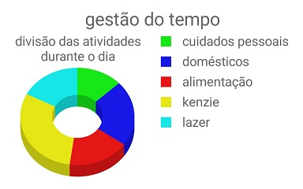

Atividade - Gestão do Tempo
criado por Bruno PavanelliOrganização Diária
- Ao acordar: + ou - as 8h:
- Cuidados Pessoais: Alongamento, Banho e Higiene Pessoal
- Domestico: Arrumar Quarto
- Alimentação: Café da manhã
- Domestico: Lavar a louça
- Kenzie: Checkin 9h
- Lazer: Youtube, responder Whats, jogos no celular
- Kenzie: Assistir Demo 9h:15m
- Kenzie: Estudo
- Alimentação: Lanche da Manhã +- 11h:30m
- Kenzie: Estudo: +- 11h:45m
- Alimentação: Almoço +- 13h
- Domestico: Lavar a louça
- Domestico /Lazer:Passeio com o Magrão
(de 30 a 60 minutos de caminhada) - Kenzie: Estudo
- Lazer: Pausa +- 16h
- Kenzie: Estudo +- 16h:30m
- Lazer: Treino 20h
- Cuidados Pessoais: Banho e Higiene Pessoal
- Alimentação: Jantar +- 21:30m
- Domestico: Lavar a louça
- Kenzie: Estudo +- 22h
- Lazer: Uma hora de leitura antes de dormir +- 23h
- Cuidados Pessoais/Descanso/Lazer: Dormir +- 00h
Lista Distribuida em Gráfico:
Observações
Gostaria de ressaltar aqui que as atividades: Cuidados Pessoais, Lazer, Doméstico e Alimentação possuem uma intrínseca relação para o meu bem-estar. Sem meu ambiente organizado, não consigo produzir. Sem minha cozinha limpa, não consigo me alimentar em paz, sem me alimentar, qualquer atividade perde o prazer e produtividade, e com certeza, o Lazer se torna volúvel. Uma coisa leva a outra e vice-versa. Mesmo tentando gerir meu tempo me guiando entre esses 4 aspectos, hoje, para priorizar os estudos e evolução profissional, acredito sim que, pensar, refletir e gerenciar o tempo é crucial para a vida como um todo, mesclando atividades pessoais, tempo com a família, hobbies, estudos e trabalho, para se obter um equilíbrio e viver a vida com o mais importante: qualidade de vida!